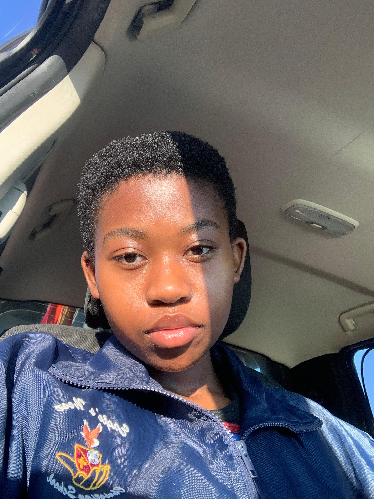

| Information on founder and designer of nesh3.co | ||
|---|---|---|
|  | ||
| Name: | Nesh Rachidi | |
| Email: | neshrachidi@gmail.com | |
| Number: | 0765297845 | |
| Postal address: | 0699, Polokwane Bendor | |
Table of contents:
Focus Question:
Considering the challenges involved in the access to and usage of smart wearable accessories, do they have the potential to be effective in the everyday lives of people globally?
Focus Area:
Smart wearable accessories
Abstract of Investigation:
The purpose of this website was to depict the investigation and to explore how smart accessories have the potential to be effective in the everyday lives of people, including the challenges invloved. My task was to gather and analyse the relevant data pertaining to this investigation, then I could identify and present the possible solutions to this cause through various applications eg. Website, Word, Database, etc. My purpose was to find out how to alleviate the possible problems involved in the daily usage of smart accessories in order for them to produce effective results in the busy everyday lives of people. What I found was that a majority of people were against the daily usage of smart accessories due to privacy concerns, costs and internet dependency. What I also found out was that although people acknowledged the benefits of smart accessories, they were not using said accessories in ways that could be beneficial to them.